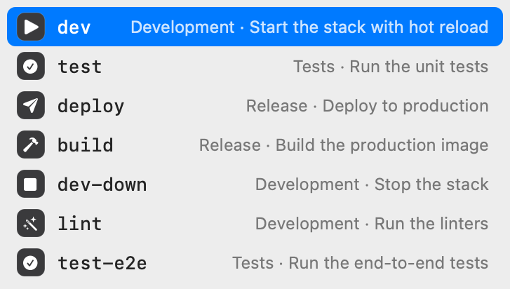
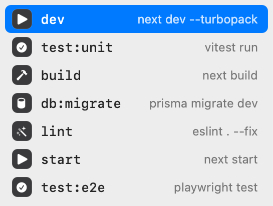
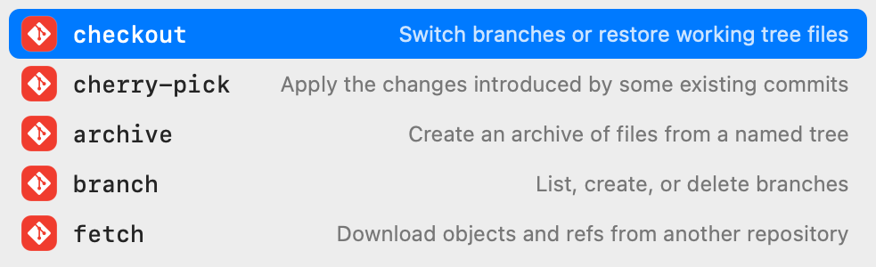
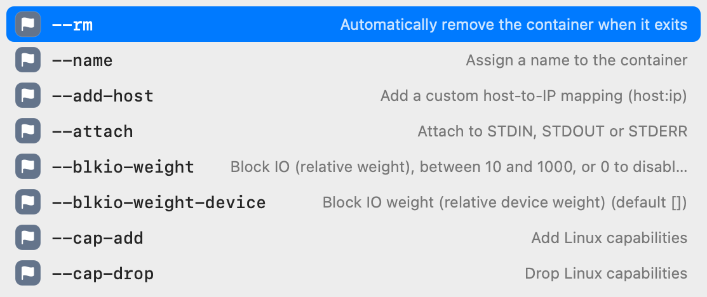
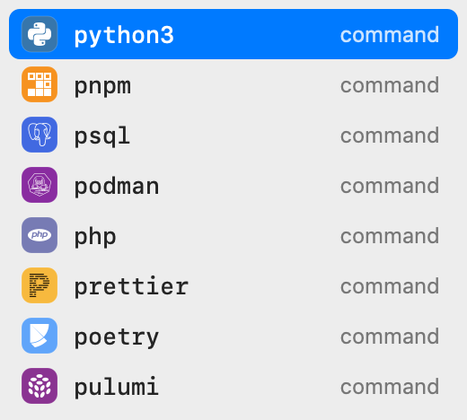
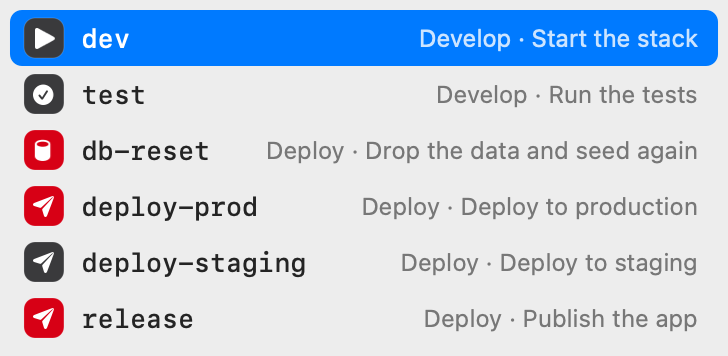
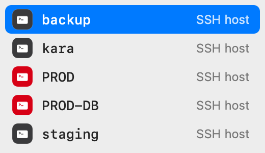

Project targets and scripts
make lists the targets of the Makefile in the current folder. npm run, pnpm, yarn, and bun run list the scripts of package.json, with the command each one runs. A new project works with no setup.
❯ npm run
Type git, docker, or make and pick the next word from a list, as you would in an editor. Works in zsh, bash, and fish on macOS.
Apple Silicon, macOS 13 or later. zsh, bash 5, or fish 4. tmux is optional. No account, no AI chat, no telemetry.
~/shop ❯ make





The popup is a real macOS window. It does not take keyboard focus and it does not draw inside your terminal session.
make lists the targets of the Makefile in the current folder. npm run, pnpm, yarn, and bun run list the scripts of package.json, with the command each one runs. A new project works with no setup.
❯ npm run
Figxit loads the open source Fig completion specs. Type a command and a space to see its subcommands, each with a one-line description. Specs also supply live values, such as git branches after git checkout and hosts after ssh.
❯ git ch
Type a dash to see the options of the command on the line. Options you have already typed are hidden from the list.
❯ docker run --
Figxit reads your Atuin history, read-only. A word scores higher when you used it in the same folder, in the same repository, or recently.
❯ p
Your commands and history stay on your Mac. The app does not report what you type or how you use it. Its only network request is the daily update check, which reads one file from this site. We count those checks by app version, so we know how many installs are in use. You can turn the check off in the menu. There is no account.
The shell hook sends the line to the engine after each key and returns at once. It reads a reply only when you press Tab or Enter.
Figxit does not need Accessibility or Screen Recording access. tmux supplies the cursor position and the cell size. Without tmux, the terminal app does.
Up and Down walk the rows of the popup.
The text goes into the line at the cursor.
Enter inserts the row you typed part of, and does not run it. When the word is complete, the first row has a return icon, and Enter runs the line.
Ctrl-U or more typing closes the popup. When it is closed, the keys do what they did before. Tab still opens your normal completion and Up still searches your history.
Figxit reads a few naming habits that many projects have already. None is required.
The text after ## is the description of the target. A line with ##@ Development starts a section, and its name shows in front of the descriptions below it.
❯ make
dev, start, and serve share one icon, test has another, build another. One list of 12 verbs covers most target and script names.
❯ npm run
A row is red when its name is in capitals, when it has the word prod or production, or when a Makefile target has [prod] or [danger] at the start of its help text. It works for SSH hosts, targets, and scripts.
❯ make

❯ ssh

Name a production host PROD, or write release: ## [prod] Publish the app, and the list shows where a mistake costs more.
The sockets live in ~/.local/state/figxit/. Nothing leaves your machine.
zsh, bash, fish
A line editor hook in your shell sends the buffer, the cursor, and the folder to the engine after each key.
Bun
Parses the line, collects candidates from the project files, the spec, and your history, then merges and ranks them.
Swift, AppKit
A macOS app with no Dock icon. It shows the floating panel and hides it when you switch app, window, or tab.
The download is a disk image with the app. The app holds the popup, the engine, and the completion specs.
Download Figxit.dmg, open it, and drag Figxit to Applications.
Open Figxit. An icon appears in the menu bar and a setup window opens. It lists the shells on your Mac. Click Set Up for your shell, or add the line yourself. This is the line for zsh. For bash and fish, the README has the lines.
eval "$('/Applications/Figxit.app/Contents/MacOS/figxit-engine' init zsh)"Open a new terminal and type a command. To check the installation, run this.
figxit doctor
To build from source, see the README.
Yes, for Fig's autocomplete: the list that opens as you type, with a description on each row. Figxit loads the same open source completion specs that Fig used. It does not have the other Fig features, such as scripts, dotfile sync, and team sharing, and it has no AI chat.
Yes, if you only want the autocomplete. Figxit needs no account and has no AI features. It is not affiliated with Fig, Amazon, or Kiro.
On a Mac with zsh, bash, or fish, yes. Both use the Fig completion specs. inshellisense draws its list inside the terminal session. Figxit shows a native macOS window under the cursor and also ranks rows by your history. inshellisense also runs on Windows and Linux and in other shells, and Figxit does not.
The Fig completion specs cover more than 700 tools, for example git, docker, npm, and kubectl. Figxit also reads the Makefile targets and package.json scripts in the current folder.
No. It has no telemetry and no account. Its only network request is the update check, one time each day, and you can turn that off in the menu.
No. Figxit works in tmux and directly in Ghostty, iTerm2, and Terminal. Without tmux, a native split of the terminal app gets no list.
Yes. Figxit is open source under the MIT licence.
Read the code, report a problem, or add an adapter for your shell. There are adapters for zsh, bash, and fish.